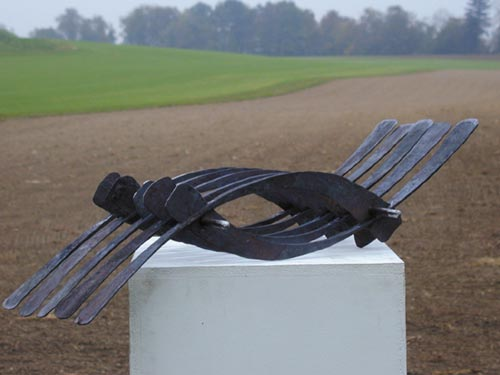

Details
Vernissage: 7. Juni 2002
Eröffnung: Dr. Wolfgang Hilger (Kulturamt der Stadt Wien)
Die Ausstellung war bis Mitte Juli 2002 zu besichtigen.
Eisenplastik

Vernissage: 7. Juni 2002
Eröffnung: Dr. Wolfgang Hilger (Kulturamt der Stadt Wien)
Die Ausstellung war bis Mitte Juli 2002 zu besichtigen.